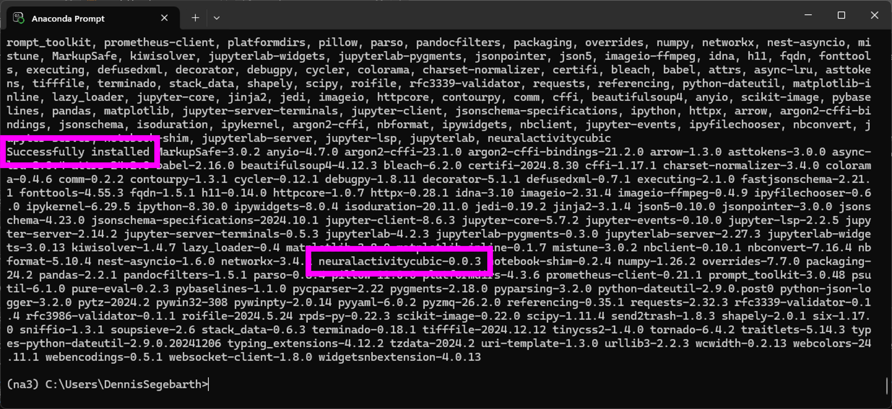

conda create --name na3 -y python=3.11Installation
This new version of NA³ is currently available via the Python Package Index or via GitHub. To be able to install and run NA³ on your system you currently need to run a few commands in the terminal, as the fully GUI-based installation will be available only soon. But don´t worry, we´ll take you through the process step by step!
Note
We´re still putting a few finishing touches onto the new implementation of NA³, so please be aware that this version remains under active development and should not yet be considered as a stable release.
Tip
We´re currently working on a paper describing our work in more details - make sure you stay tuned and regularly check these docs for updates!
1. Install Anaconda
Though not strictly required, we highly recommend installing NA³ in a virtual Python environment that you setup via Anaconda - especially for users with limited (or even no) programming expertise. Please download the corresponding distribution for your operating system here and follow the respective installation wizard to install Anaconda on your system.
2. Create and activate a new virtual environment
Next, we´ll need a terminal to install NA³ with just a few commands. For this, we suggest using the tool Anaconda Prompt that came with the installation of Anaconda (but if you prefer to use a different terminal, please feel free to use it - the only requirement is that conda is accessible, which comes per default in Anaconda Prompt). In the terminal (e.g. in Anaconda Prompt), please type the following command and execute it by hitting the Return key on your keyboard. It will create a new virtual environment that we can use to install NA³, using conda:
Once the setup of the environment has concluded, you should see a message like the following, informing you how to activate the environment:
We´ll do exactly as suggested to activate the newly created virtual environment to continue the installation of NA³. Thus, please run the following command in the Anaconda Prompt terminal:
conda activate na3You should now see that the input line in the Anaconda Prompt terminal starts with (na3) - indicating that you successfully switched to this virtual environment.
3. Install the neuralactivitycubic Python package:
With the activated na3 environment, please complete the installation of NA³ by running on final command in the Anaconda Prompt terminal:
pip install neuralactivitycubicUpon executing this command, you will see a lot of output and activity in the terminal while it downloads the source code of NA³ and it´s dependencies, and installs them all in the virtual environment on your system. You know that the installation has finished, when the input line starting with (na3) appears again. The final few messages that are shown in Anaconda Prompt will then likely look similar to this:

4. Done!
Congratulations! That´s already everything you need to do to install NA³ on your system. You can now use NA³ to analyze your data and hopefully start a journey to the next scientific breakthrough!
If you´d like to get some more information on how to use NA³, please check out the following chapters in this documentation:
We´d love to hear your Feedback:
You are using NA³ for your research - or would like to do so, but there´s that one cool feature missing for you? That´s great! We´d love to hear your feedback, feature requests, or bug reports to keep improving NA³ - please use this form on GitHub to submit it, we appreciate it a lot!
Please feel free to also explore all other Research Software that our not-for-profit organization has developed, or learn more about us and what we do on our website. If you are interested to partner with us for a similar collaboration on your Research Software, or to develop it with or for you from scratch, don´t hesitate and drop us an email - we´re always looking for new opportunities to catalyze science be delivering cutting-edge technology tailored to the specific research challenges of our collaborators!
![]()